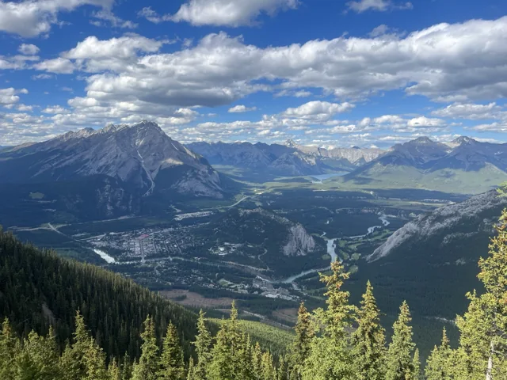

FIELD NOTE ·
Starting close to home
I’m starting close to home with a 12-week bouldering plan. One thing I want to practice is placing my feet more deliberately, even on easy climbs.
Read my bouldering plan
OUTSIDE
Notes on climbing, time outside, and working toward bigger mountains.
← AdventuresFIELD NOTE ·
I’m starting close to home with a 12-week bouldering plan. One thing I want to practice is placing my feet more deliberately, even on easy climbs.
Read my bouldering plan